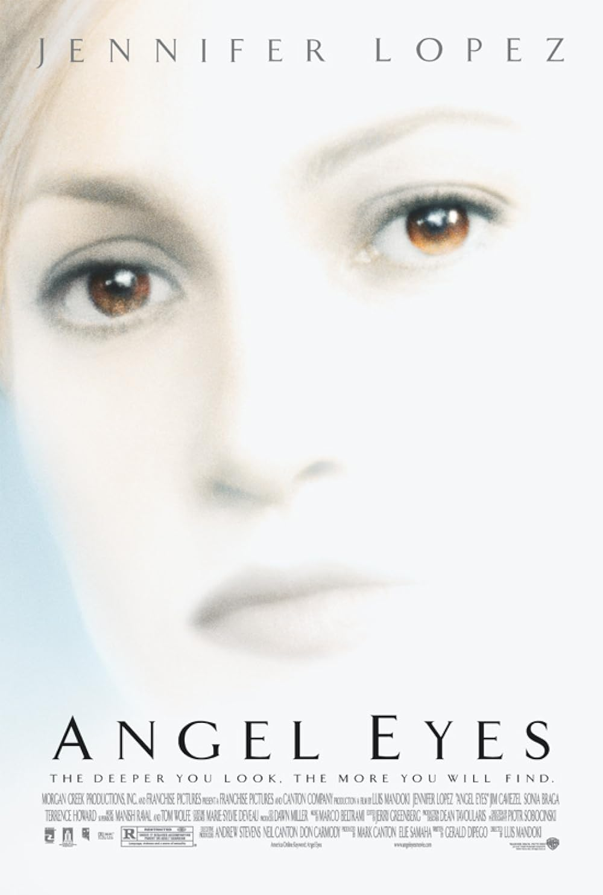
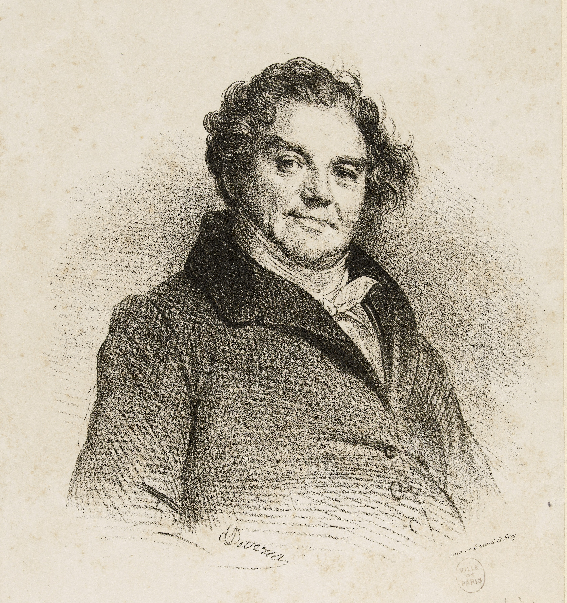

Jesse Rosenthal
Fall 2025
Schedule
Lectures on Monday and Wednesday
Discussion Sections on Friday
Discussion Leaders:
Sylvia Cutler
Corinne Shearer
David Shipko
Reading
Do the week's reading in advance (unless otherwise).
Keep up!
Quizzes
On Canvas
Posted Sunday at noon (on Tuesday by announcement)
Available until Monday (Wednesday) at 10:30
10 minutes
A reward for doing the reading
Popular genres

Ronald Knox
From the Introduction to The Best Detective Stories of 1928-29.
Ronald Knox
From the Introduction to The Best Detective Stories of 1928-29.
1789--
The age of...
- ...the middle class
- ...the individual
- ...the city
- ...the subconscious
- ...the bureaucratic surveillance

The first essential value of the detective story lies in this, that it is the earliest and only form of popular literature in which is expressed some sense of the poetry of modern life. Men lived among mighty mountains and eternal forests for ages before they realized that they were poetical; it may reasonably be inferred that some of our descendants may see the chimney-pots as rich a purple as the mountain-peaks, and find the lamp-posts as old and natural as the trees. Of this realization of a great city itself as something wild and obvious the detective story is certainly the 'Iliad'... The lights of the city begin to glow like innumerable goblin eyes, since they are the guardians of some secret, however crude, which the writer knows and the reader does not. Every twist of the road is like a finger pointing to it; every fantastic skyline of chimney-pots seems wildly and derisively signalling the meaning of the mystery.... (G. K. Chesterton, "Defense of Detective Stories")
This realization of the poetry of London is not a small thing. A city is, properly speaking, more poetic even than a countryside, for while Nature is a chaos of unconscious forces, a city is a chaos of conscious ones. The crest of the flower or the pattern of the lichen may or may not be significant symbols. But there is no stone in the street and no brick in the wall that is not actually a deliberate symbol--a message from some man, as much as if it were a telegram or a post-card. The narrowest street possesses, in every crook and twist of its intention, the soul of the man who built it, perhaps long in his grave. Every brick has as human a hieroglyph as if it were a graven brick of Babylon; every slate on the roof is as educational a document as if it were a slate covered with addition and subtraction sums. (G. K. Chesterton, "Defense of Detective Stories")